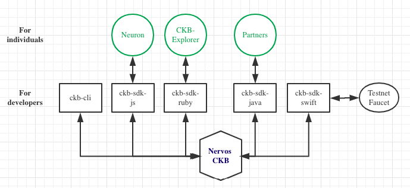

Introduction
Nervos CKB provides a stateful Turing-complete programming model based on CKB-VM and the cell model and has great potential as a platform that can many new kinds of applications.
We welcome developers to provide passion, innovation and diversity of ideas to improve Nervos. If you’re new to developing with Nervos CKB, you have come to the right place.
These guides will introduce you to the tooling of Nervos CKB, which may be different from other app development you’re familiar with.
At this time, Nervos CKB tooling includes (will be not limited to) the following. All are open source projects on Github:
For users:
Lina Mainnet Github | Chain info
- The release of the Lina Mainnet occurred at 9:11 PM UTC on Nov 15. Please join us as we launch the decentralized infrastructure for the new economy Run a CKB Mainnet node.
Neuron Wallet Github | Download
Neuron Wallet is an official Nervos CKB wallet. It holds users’ keys, can create and broadcast transactions to the peer to peer network, and also provides the ability to easily Deposit and Withdraw into the Nervos DAO.
With the v0.26.0 release of Neuron Wallet, a CKB node is now included in the wallet and configured to connect to the CKB Mainnet. After installation, as you open the Neuron Wallet, the bundled Mainnet node will run.
Neuron Wallet is a cross platform desktop app for Windows, macOS and Linux, you can download here and install it.
- CKB-Explorer allows you to explore the data of the Nervos CKB Mainnet for transactions, addresses, tokens, blocks, hashrate, Nervos DAO info and all other activities taking place on Nervos CKB. Please note that CKB-Explorer is not a wallet service provider. We do not store your private keys and we have no control over the transactions that take place over the CKB Network.
For developers：
Aggron Testnet Github | Chain info
- Aggron Testnet has launched, allowing developers to test their integrations and smart contracts in a simulated live environment. Please note that the CKBytes in Aggron Testnet have no real value.
Testnet Explorer Link
- Testnet Explorer allows you to explore the data of the Nervos CKB Testnet for transactions, addresses, tokens, blocks, hashrate, Nervos DAO info and all other activities taking place on Testnet. Please note that Testnet Explorer is not a wallet service provider. We do not store your private keys and we have no control over the transactions that take place over the CKB Network.
ckb-sdk
- There are a couple different aspects to developing blockchain applications with CKB:
- Smart contract development - writing code that gets deployed to the blockchain.
- Developing websites or clients that interact with the blockchain - writing code that reads data from or writes data to the blockchain with smart contracts.
ckb-sdk enables the second method of development, developing client applications that interact with the Nervos CKB blockchain.
ckb-sdk is a collection of libraries which allow you to interact with a local or remote CKB node by using JSON-RPC. Please note that ckb-sdk is still under development and NOT production ready. You should get familiar with CKB transaction structure and JSON-RPC before using it. now ckb-sdk is implemented by four kind of programming language: JavaScript、Ruby、Swift、Java.
- ckb-sdk-js Github
- ckb-sdk-js is an SDK implemented in JavaScript, and published in NPM Registry, and provides APIs for developers to send requests to the CKB blockchain. Neuron Wallet utilizes ckb-sdk-js .
- ckb-sdk-ruby Github
- ckb-sdk-ruby is an SDK implemented in Ruby and provides APIs for developers to send requests to the CKB blockchain. CKB-Explorer utilizes ckb-sdk-ruby .
- ckb-sdk-swift Github
- ckb-sdk-swift is an SDK implemented in Swift and provides APIs for developers to send requests to the CKB blockchain. Testnet Faucet utilizes ckb-sdk-swift .
- ckb-sdk-java Github
- ckb-sdk-java is an SDK implemented in Java and provides APIs for developers to send requests to the CKB blockchain.
ckb-cli Github
- ckb-cli is a command line tool for debugging CKB in development to facilitate user interaction with CKB.
- Testnet Faucet is where you can acquire free Testnet CKBytes to use while developing and testing.

Disclaimer
AS A DECENTRALIZED BLOCKCHAIN, NERVOS FOUNDATION DOES NOT CONTROL NERVOS CKB OR CKBYTES AND DOES NOT HAVE THE ABILITY TO STOP, BLOCK OR REVERSE ANY TRANSACTIONS. NERVOS FOUNDATION DOES NOT MAKE ANY WARRANTIES WHATSOEVER WITH RESPECT TO THE NERVOS CKB OR CKBYTES, INCLUDING ANY (i) WARRANTY OF MERCHANTABILITY; (ii) WARRANTY OF FITNESS FOR A PARTICULAR PURPOSE; (iii) WARRANTY OF TITLE; OR (iv) WARRANTY AGAINST INFRINGEMENT OF INTELLECTUAL PROPERTY RIGHTS OF A THIRD PARTY; WHETHER ARISING BY LAW, COURSE OF DEALING, COURSE OF PERFORMANCE, USAGE OF TRADE, OR OTHERWISE. YOU ACKNOWLEDGE THAT YOU HAVE NOT RELIED UPON ANY REPRESENTATION OR WARRANTY MADE BY THE FOUNDATION OR ANY OTHER PERSON ON ITS BEHALF. YOU ASSUME ALL RISKS AND LIABILITIES FOR THE RESULTS OBTAINED BY THE USE OF ANY CKBYTES AND REGARDLESS OF ANY ORAL OR WRITTEN STATEMENTS MADE BY THE FOUNDATION, BY WAY OF TECHNICAL ADVICE OR OTHERWISE.